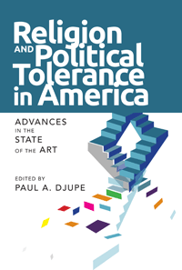

<body bgcolor="#FFFFFF" text="#000000" link="#0000FF" vlink="#CC0000" alink="#CC0000"><center><hr width="350" size="1" align="center" noshade>Cutting-edge scholarship that sets the agenda for research on religion and political tolerance<hr width="350" size="1" align="center" noshade><p><a href="https://cdcshoppingcart.uchicago.edu/Cart/ChicagoBook.aspx?ISBN=9781439912324&&PRESS=temple" target="_top">Buy this book!</a> | <a href="https://cdcshoppingcart.uchicago.edu/Cart/Cart.aspx?PRESS=temple" target="_top">View Cart</a> | <a href="https://cdcshoppingcart.uchicago.edu/Cart/Cart.aspx?PRESS=temple" target="_top">Check Out</a></p><p></p></center><!--none//--><h1>Religion and Political Tolerance in America</h1>
<H2>Advances in the State of the Art</H2>
<h3>edited by Paul A. Djupe</h3>
<P>cloth 1-4399-1232-7 $84.50, Jun 15, <FONT COLOR=#990033>Available</FONT>
<br>paper 1-4399-1233-5 $31.95, Jun 15, <FONT COLOR=#990033>Available</FONT>
<br>Electronic Book 1-4399-1234-3 $31.95 <FONT COLOR=#990033>Available</FONT>
<BR> 270 pp
6x9
25&nbsp;tables 18&nbsp;figures
</P><BLOCKQUOTE><I>"</I>Religion and Political Tolerance in America<I> is a terrific volume. Paul Djupe has recruited top scholars in the discipline, and he and his contributors provide original, rigorous research that nicely complements the religion literature on clergy, public opinion, and social psychology. It brings the scholarly treatment of tolerance up to date, addresses key debates, and provides important coverage. </I>Religion and Political Tolerance in America<I> makes a significant contribution to the literature."</i><br>&#151<b>Elizabeth A. Oldmixon</b>, Associate Professor of Political Science at the University of North Texas</I></BLOCKQUOTE>
<P>Religious institutions are often engaged in influencing the beliefs and values that individuals hold. But religious groups can also challenge how people think about democracy, including the extension of equal rights and liberties regardless of viewpoint, or what is commonly called political tolerance.
<P>The essays in <I>Religion and Political Tolerance in America</I> seek to understand how these elements interrelate. The editor and contributors to this important volume present new and innovative research that wrestles with the fundamental question of the place of religion in democratic society. They address topics ranging from religious contributions to social identity to the political tolerance that religious elites (clergy) hold and advocate to others, and how religion shapes responses to intolerance.
<P>The conclusion, by Ted Jelen, emphasizes that religion�s take on political tolerance is nuanced and that they are not incompatible; religion can sometimes enhance the tolerance of ordinary citizens.
<P><I>Contributors include: Pazit Ben-Nun Bloom, Ryan P. Burge, Brian R. Calfano, April K. Clark, Marie Courtemanche, Daniel Cox, Marie A. Eisenstein, Christopher Garneau, Ted G. Jelen, Robert P. Jones, Christine Kim, Jeffrey B. Kurtz, Stephen T. Mockabee, Juhem Navarro-Rivera, Jacob R. Neiheisel, Laura R. Olson, Joby Schaffer, Patrick Schoettmer, Anand E. Sokhey, Clyde Wilcox, and the editor.</I>
<BR>&nbsp;<h2>Excerpt</h2><P>Excerpt available at <a href="http://www.temple.edu/tempress">www.temple.edu/tempress</a></p>
<BR>&nbsp;<h2>Contents</h2><P>
<p>Acknowledgments
<br>Introduction � <i>Paul A. Djupe</i>
<p><b>Part I: Religion and the Elitist Theory</b>
<br>1. The Political Tolerance of Clergy and Its Democratic Roots � <i>Paul A. Djupe, Ryan P. Burge, and Brian R. Calfano</i>
<br>2. The Golden Rule Theory: The Nature of Clergy Influence on Congregational Political Tolerance � <i>Paul A. Djupe and Brian R. Calfano</i>
<br>3. Religious Tolerance in the Presbyterian Church (USA) � <i>Paul A. Djupe and Jeffrey B. Kurtz</i>
<br>4. Fearful Asymmetry: Tolerance of Christian Fundamentalists among Political Elites � <i>Clyde Wilcox and Christine Kim</i>
<p><b>Part II: Social Psychology of Religion and Citizen Political Tolerance</b>
<br>5. Heterogeneous Religion Measures and Political Tolerance Outcomes � <i>Marie A. Eisenstein and April K. Clark</i>
<br>6. Religion, Morality, and Tolerance: The Role of Disgust � <i>Pazit Ben-Nun Bloom and Marie Courtemanche</i>
<br>7. Religious Worldviews and Political Tolerance: Communitarianism, Inclusiveness, and Moral Foundations � <i>Paul A. Djupe and Stephen T. Mockabee</i>
<br>8. Nonreligious Tolerance: American Attitudes toward Atheists, America�s Most Unpopular Religious Group � <i>Daniel Cox, Robert P. Jones, and Juhem Navarro-Rivera</i>
<br>9. The Religious Economy of Political Tolerance � <i>Joby Schaffer, Anand E. Sokhey, and Paul A. Djupe</i>
<br>10. Predispositions, Standing Decisions, Political Tolerance, and the Role of Religion: An Exploratory Model � <i>Marie A. Eisenstein</i>
<p><b>Part III: How Religion Shapes Responses to Intolerance</b>
<br>11. Carriers of the Creed? The Effects of Urging Tolerance on Persuasion � <i>Paul A. Djupe, Jacob R. Neiheisel, and Laura R. Olson</i>
<br>12. Going to Extremes: Stereotypes, Constitutional Violations, and Support for Religious Elites � <i>Brian R. Calfano and Paul A. Djupe</i>
<br>13. Stigma Management by Midwestern Secularists � <i>Christopher Garneau</i>
<br>14. American Muslim Political Responses to Threat � <i>Patrick Schoettmer</i>
<br>Conclusion: Reflections on the Study of Religion and Political Tolerance � <i>Ted G. Jelen</i>
<p>Contributors
<br>Index
</P><BR>&nbsp;<H2>About the Author(s)</H2>
<P><b>Paul A. Djupe</b> is Associate Professor of Political Science at Denison University. He is the coauthor of <i>The Political Influence of Churches</i>, with Christopher P. Gilbert; of <i>Religious Interests in Community Conflict: Beyond the Culture Wars</i>, with Laura R. Olson; and of <i><a href="2209_reg.html" target="_top">God Talk: Experimenting with the Religious Causes of Public Opinion</a></i>, with Brian R. Calfano (Temple). He is also coeditor of the journal <i>Politics and Religion</i>.</P>
<BR><H2>Subject Categories</H2>
<p><A HREF="/tempress/political.html" TARGET="_top">Political Science and Public Policy</a>
<BR><A HREF="/tempress/religion.html" TARGET="_top">Religion</a>
<BR><A HREF="/tempress/mass_media.html" TARGET="_top">Mass Media and Communications</a>
</p>
<BR><h2 class="inpageheading">In the series</H2>
<P><I><a href="http://www.temple.edu/tempress/social_logic.html" onMouseOver="window.status='Click for other books in this series!'; return true;" onMouseOut="window.status=''; return true;" target="_top">Social Logic of Politics</a></i>, edited by Scott D. McClurg.
</p><p>The <i>Social Logic of Politics Series</i>, edited by Scott D. McClurg (formerly edited by Alan S. Zuckerman), directs attention to several related clusters of research in the social sciences. At the core is a theoretical principle: individuals make political decisions, like other choices, by taking into account cues from other persons. Studies move from individuals to groups to large scale collectivities. Usually examining micro-politics-voting and other forms of political participation; the place of politics in households, the family, the friendship unit, and the neighborhood- this research also studies how broader political and social contexts influence and are influenced by these micro-processes. It includes as well "small group behavior" in political institutions, such as exchanges of cues in legislatures and patron-client relations in bureaucratic agencies and political parties. Books in The Social Logic of Politics Series will apply research techniques that run the gamut of contemporary political science, sociology, communications, and geography.</p>
<p align="center"><a href="https://cdcshoppingcart.uchicago.edu/Cart/ChicagoBook.aspx?ISBN=9781439912324&&PRESS=temple" target="_top">Buy this book!</a> | <a href="https://cdcshoppingcart.uchicago.edu/Cart/Cart.aspx?PRESS=temple" target="_top">View Cart</a> | <a href="https://cdcshoppingcart.uchicago.edu/Cart/Cart.aspx?PRESS=temple" target="_top">Check Out</a></p><p><font face="Arial" size="1"><a href="copyright.html" onMouseOver="window.status='Web Copyright Policy';return true;" onMouseOut="window.status=''" title="Web Copyright Policy">&copy;</a> 2015 <a href="http://www.temple.edu" target="new" onMouseOver="window.status='Link to Temple University home page';return true;" onMouseOut="window.status=''" title="Link to Temple University home page">Temple University</a>. All Rights Reserved. http://www.temple.edu/tempress/titles/2355_reg.html</font></p>